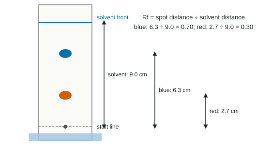

Separation of Solutions and Mixtures
Mixtures are separated by physical properties that trace back to particle forces.
Part 1 · Hook
Why this matters
Part 2 · Before you start
What this builds on
Part 3 · Prerequisite check
Quick check before you start
1. Which liquid has the higher vapor pressure at 25 °C?
- The one with weaker intermolecular forces
- The one with stronger intermolecular forces
- The one with more mass
Show the answer
Weaker attractions let more molecules escape.
- Correct: The one with weaker intermolecular forces:
- The one with stronger intermolecular forces:
- The one with more mass:
2. Which molecule can hydrogen-bond to an –OH group?
- CH₃OH
- CH₄
- C₆H₁₄
Show the answer
Methanol has an O–H group and lone pairs on O.
- Correct: CH₃OH:
- CH₄:
- C₆H₁₄:
Part 4 · See it
See it first

Part 5 · Step by step
How it works, step by step
- Components of a mixture differ in size, attractions or volatilityphysical methods can separate them without changing them
- In chromatography each component is pulled by a stationary and a mobile phasethe one held more by the stationary phase moves more slowly and has a smaller Rf
- In distillation the component with weaker intermolecular forces has the higher vapor pressureit boils off first and is collected first
- Undissolved solids are larger than filter pores; dissolved particles are notfiltration removes solids but cannot separate a solution
Part 6 · Key ideas
Key ideas
- Filtration: undissolved solid from liquid, by size.
- Chromatography: stronger attraction to the stationary phase means slower movement. Rf = spot distance ÷ solvent distance.
- Paper is polar: polar components lag; a more polar solvent carries them farther.
- Distillation: weaker intermolecular forces, higher vapor pressure, vaporizes first.
Part 7 · Misconception
A common mistake
The wrong idea: In chromatography, heavier molecules move more slowly because they are harder to carry.
What actually happens: Separation follows attractions, not mass. A component held more strongly by the stationary phase moves more slowly, whatever its mass.
Part 8 · Check yourself
Check yourself
Exam-style questions. Anything you miss goes into your review queue.
Data table
Identifying the dyes in a drink
A student spots a sports drink and four known food dyes on one strip of chromatography paper and develops it with a salt-water solvent. The solvent front ends 8.0 cm above the start line.
| Sample | Spot distance (cm) | Rf |
|---|---|---|
| Unknown | 6.4, 2.0 | ? |
| Dye A | 6.4 | 0.80 |
| Dye B | 4.0 | 0.50 |
| Dye C | 2.0 | 0.25 |
| Dye D | 1.2 | 0.15 |
1. What is the Rf of the drink's higher spot?
Type a number.
Show the answer
Rf = 6.4 cm ÷ 8.0 cm = 0.80. The distances share units, so Rf has none.
- Answer: 0.80
2. Which dyes are present in the drink? Select all that apply.
- Dye A
- Dye B
- Dye C
- Dye D
Show the answer
The drink's spots have Rf = 6.4/8.0 = 0.80 and 2.0/8.0 = 0.25, matching Dye A (0.80) and Dye C (0.25).
- Correct: Dye A: Right: Rf 0.80 matches.
- Dye B: Dye B has Rf 0.50; the drink has no spot there.
- Correct: Dye C: Right: Rf 0.25 matches.
- Dye D: Dye D has Rf 0.15; the drink has no spot there.
3. Dye D has the smallest Rf. Which conclusion is supported?
- Dye D is held most strongly by the paper relative to the solvent.
- Dye D has the most mass, so it is too heavy to be carried far up the paper.
- Dye D interacts most strongly with the solvent, so it stays near the start line.
- Dye D was spotted last, so it had the least time to travel up the paper.
Show the answer
A small Rf means the component spent most of its time attached to the stationary phase. That reflects stronger attractions to the paper than to the solvent.
- Correct: Dye D is held most strongly by the paper relative to the solvent.: Right: held most by the stationary phase.
- Dye D has the most mass, so it is too heavy to be carried far up the paper.: Separation follows attractions to the two phases, not mass.
- Dye D interacts most strongly with the solvent, so it stays near the start line.: Strong attraction to the solvent would carry it farther, giving a large Rf.
- Dye D was spotted last, so it had the least time to travel up the paper.: All samples develop together for the same time.
Data table
Distilling a mixture of two liquids
A student distills a mixture of two liquids, acetone and water, and records the temperature of the vapor at the top of the apparatus as liquid collects in the receiving flask.
| Volume collected (mL) | Vapor temperature (°C) |
|---|---|
| 0 | 56 |
| 10 | 57 |
| 20 | 58 |
| 30 | 61 |
| 35 | 78 |
| 40 | 97 |
| 50 | 100 |
| 60 | 100 |
4. Which liquid is collected first?
- Water, which boils at about 100 °C
- Acetone, which boils at about 56 °C
- Both at once, in equal amounts
- Neither, until 100 °C is reached
Show the answer
The vapor stays near 56–61 °C for the first 30 mL: that is acetone, the lower-boiling liquid, vaporizing first.
- Water, which boils at about 100 °C: Water comes over later, at the 100 °C plateau.
- Correct: Acetone, which boils at about 56 °C: Right: the first plateau is near acetone's boiling point.
- Both at once, in equal amounts: The two plateaus show they come over one after the other.
- Neither, until 100 °C is reached: Liquid starts collecting at 56 °C.
5. Which statement best explains why acetone distills first?
- Acetone has weaker intermolecular forces, so its vapor pressure is higher.
- Acetone molecules are heavier than water molecules, so they rise into the vapor first.
- Water molecules break apart at 56 °C, so they stay behind in the boiling flask.
- Acetone hydrogen-bonds more strongly than water, so it leaves the liquid together.
Show the answer
Acetone has dipole-dipole and dispersion forces but cannot hydrogen-bond to itself; water hydrogen-bonds extensively. Weaker attractions give acetone the higher vapor pressure and the lower boiling point.
- Correct: Acetone has weaker intermolecular forces, so its vapor pressure is higher.: Right: weaker attractions, more volatile.
- Acetone molecules are heavier than water molecules, so they rise into the vapor first.: Heavier molecules would not escape more easily; and attractions, not mass, decide.
- Water molecules break apart at 56 °C, so they stay behind in the boiling flask.: Water molecules stay intact; no covalent bonds break.
- Acetone hydrogen-bonds more strongly than water, so it leaves the liquid together.: Acetone has no H bonded to O, so it cannot hydrogen-bond with itself.
6. Why does filtration not separate the salt from salt water?
- Dissolved ions are far smaller than the pores of the paper.
- Salt ions stick to the filter paper and block it before any water passes.
- Filtration works on gases, not on liquids such as salt water.
- The salt reacts with the paper and forms a new dissolved compound.
Show the answer
A solution is mixed down to individual particles. Ions are about 10⁻¹⁰ m across, thousands of times smaller than filter pores, so they pass through with the water.
- Correct: Dissolved ions are far smaller than the pores of the paper.: Right: dissolved particles pass through.
- Salt ions stick to the filter paper and block it before any water passes.: The ions pass through freely; they do not clog the filter.
- Filtration works on gases, not on liquids such as salt water.: Filtration is used for liquids all the time.
- The salt reacts with the paper and forms a new dissolved compound.: No reaction occurs with filter paper.
7. Hexane (C₆H₁₄) and 1-propanol (C₃H₇OH) are separated on a column packed with polar silica (covered in –OH groups) using a nonpolar solvent. Which comes out of the column first, and why?
- Hexane, because it is barely attracted to the polar silica.
- 1-Propanol, because it hydrogen-bonds to the solvent and is carried along.
- Hexane, because it is the heavier molecule and falls through the column faster.
- 1-Propanol, because it has fewer carbon atoms and fits through the packing.
Show the answer
The polar silica holds 1-propanol by hydrogen bonds; nonpolar hexane interacts only weakly with it and stays in the mobile phase, so it leaves first.
- Correct: Hexane, because it is barely attracted to the polar silica.: Right: weakest attraction to the stationary phase moves fastest.
- 1-Propanol, because it hydrogen-bonds to the solvent and is carried along.: A nonpolar solvent cannot hydrogen-bond; 1-propanol is held by the silica instead.
- Hexane, because it is the heavier molecule and falls through the column faster.: Separation follows attractions, not falling speed.
- 1-Propanol, because it has fewer carbon atoms and fits through the packing.: Size is not the main factor here; polarity is.
Part 9 · Summary
Summary
Part 10 · Up next
What comes next
Part 11 · Connections